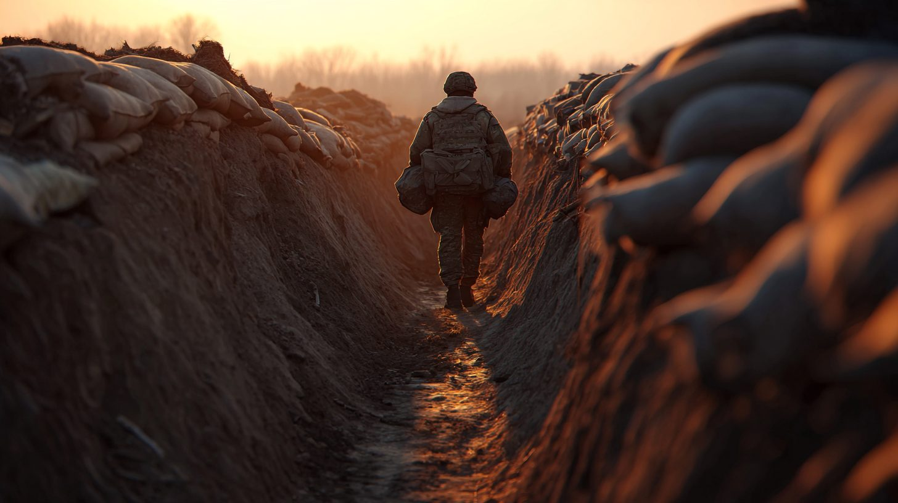
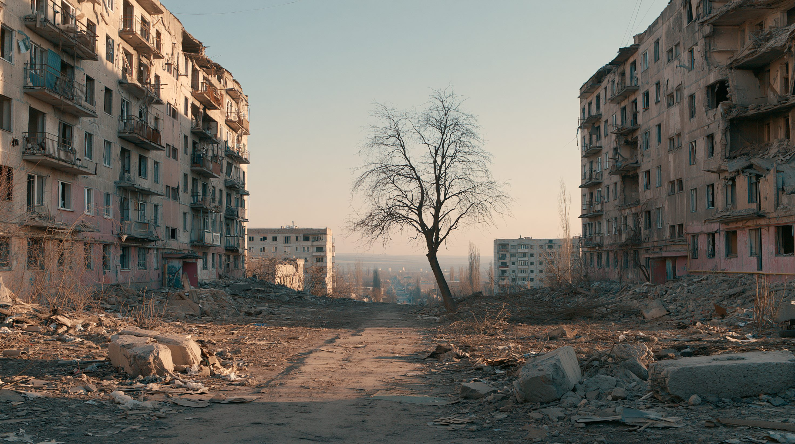
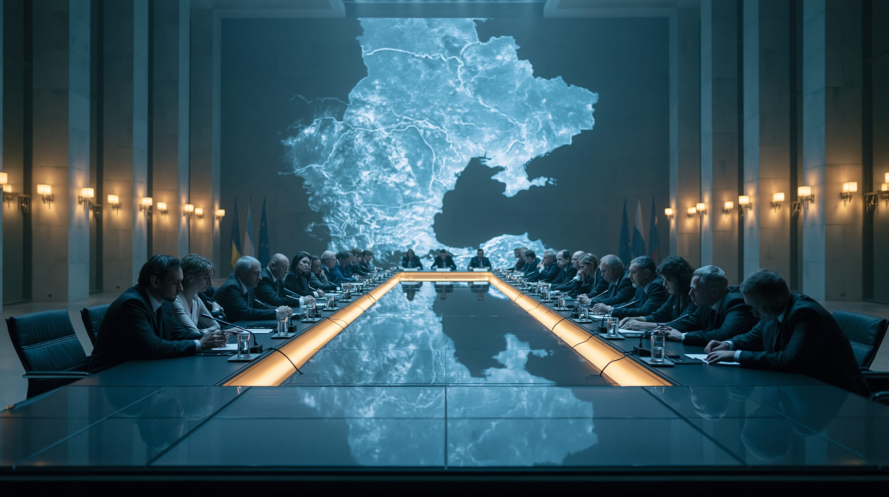

01核心と問い — 「勝敗」から「持久」へ
2022年2月24日、ロシアは「特別軍事作戦」と称してウクライナへの全面侵攻を開始した。キーウ（キエフ）の電撃占領を狙った当初の作戦は失敗し、戦場は東部・南部での消耗戦へと移行した。それから4年以上が経過した2026年の段階で、戦線全体では大規模な突破は起きていない。アメリカの戦争研究所〈ISW〉とCritical Threatsの戦況評価によれば、2025年12月から2026年5月にかけてロシア軍が新たに支配・浸透した地域は約40平方キロメートルにとどまり、同じ期間にウクライナ軍が押し戻した地域がこれを上回ったとされる。ただし「支配」「浸透」「一時的前進」「奪還」のどれを数えるかで数字は変わり、局地的にはロシア軍の前進とウクライナ軍の押し戻しが同時に起きている。支配地域は小刻みに変動しながらも、戦線全体は事実上の膠着にある。
戦況の膠着は、単に前線が動かないことを意味しない。この戦争は完全な膠着ではなく、双方が砲撃・ドローン攻撃・歩兵の前進を繰り返しながら、局地的な前進と後退を続ける「動きのある消耗戦」になっている。そこで問われるのは、どちらが長く戦い続けられるかという持久力だ。本記事はその構造を、戦線・経済・外部支援という三つの軸から読み解く。

02タイムライン — 機動戦から消耗戦へ
全面侵攻開始 — 電撃戦の失敗
ロシアがウクライナへの全面侵攻を開始。キーウ（キエフ）への電撃占領を狙ったが、ウクライナ軍の抵抗と補給の失敗により撤退。戦場は東部・南部へ移行した。北大西洋条約機構〈NATO〉諸国が支援を本格化し、対戦車兵器・砲弾が供与され始める。
ウクライナの反攻 — ハルキウ・ヘルソン奪還
ウクライナ軍が北東部ハルキウ州と南部ヘルソン州で大規模な反攻作戦を展開し、多くの領土を奪還。アメリカ製の高機動ロケット砲システム（HIMARS）などの精密誘導兵器が戦局を変えた。ロシアは部分動員令を発令し、戦争の長期化を認めた形となった。
反転攻勢の頓挫 — 消耗戦への移行
ウクライナが南部ザポリージャ方向への大規模反転攻勢を開始したが、ロシアの地雷原・陣地防御の前に前進は限定的だった。攻勢終末後、戦場は「消耗戦」として定着。双方が砲撃とドローンによる消耗を競う構図に移行した。
東部でロシアがじわじわ前進
ロシアがドネツク州を中心に低速度で前進を続けた。アウジーウカが2024年2月に陥落。ウクライナは防御ラインを維持しながらも後退を余儀なくされた。アメリカでは追加支援法案が議会で長期停滞し、砲弾不足がウクライナの防御を圧迫した。
ポクロウシク制圧・前線膠着・停戦交渉
2025年を通じてロシア軍はドネツク州西部で低速の前進を続け、交通要衝ポクロウシクへ迫った。2026年初頭、同市はロシア軍の支配下に入ったとみられるが、その後の西進は鈍化し、膠着状態が続いた。トランプ政権が2026年5月に3日間の停戦を仲介したが崩壊。欧州連合は900億ユーロの融資パッケージを自らの予算を裏付けに組成し、これとは別に凍結ロシア資産の運用益をウクライナ支援に充てる仕組みも動かした。アメリカの軍事支援は継続されているが、条件と規模が変化している。

036つの視点
| 立場 | 望む結末 | 時間は味方か | 最大の弱み |
|---|---|---|---|
| ウクライナ政府 | 領土回復＋安全保障の保証 | 外部支援が続けば有利 | 歩兵不足・動員への国民の抵抗 |
| ロシア | 東部・南部の既占領地維持と緩衝化 | 西側の結束が緩めば有利 | 経済停滞・財政圧迫・孤立化 |
| アメリカ（トランプ政権） | 早期停戦・コスト削減 | 長引くほど不利 | 「見捨てた」と見られる外交コスト |
| 欧州 | ウクライナの主権回復・欧州安保の安定 | ロシアの弱体化が続けば有利 | 支援疲れ・アメリカ分担なしの資金不足 |
| グローバルサウス | 早期停戦と市場安定 | 長期化は不利 | 仲介の実効力がない |
| 現実主義・懐疑論 | 凍結停戦（現状ライン前後） | 中立 | 停戦後の再侵攻リスクを説明できない |

04データ・統計
国・地域別の累計支援額（2022〜2026年、億ユーロ）
軍事・財政・人道支援の合計。アメリカは単一国として最大だが、EU機関と欧州各国（ドイツ・イギリス・その他欧州）を合算した「欧州全体」ではアメリカを上回る。出典：Kiel Institute for the World Economy（Ukraine Support Tracker、2026年時点）
ロシアの軍事費GDP比の推移（%）
概数・SIPRI〈ストックホルム国際平和研究所〉等を基に作成。2022年以降の急上昇が持久戦への転換を示す。2025年をピークに2026年はやや抑制されたが、依然として高水準にある。
注目の数字
消耗の指標 — ウクライナ vs ロシア
| 指標 | ウクライナ | ロシア |
|---|---|---|
| 兵員 | 歩兵不足・無断離隊増加・動員への抵抗 | 高額契約金による募兵、囚人・地方出身者の動員、北朝鮮兵を含む外部補充 |
| 防空 | パトリオット迎撃弾の不足が深刻 | 長距離ミサイル・ドローンの大量使用 |
| 資金 | 対外支援に高依存・不足が構造化 | GDP比6%台で持久可能も成長停滞 |
| 前線 | 膠着・後退圧力を受けながら防衛 | 低速で前進も突破口を開けず膠着 |
出典：IISS Military Balance、ISW戦況評価、カーネギー国際平和財団を基に整理（2026年6月現在）